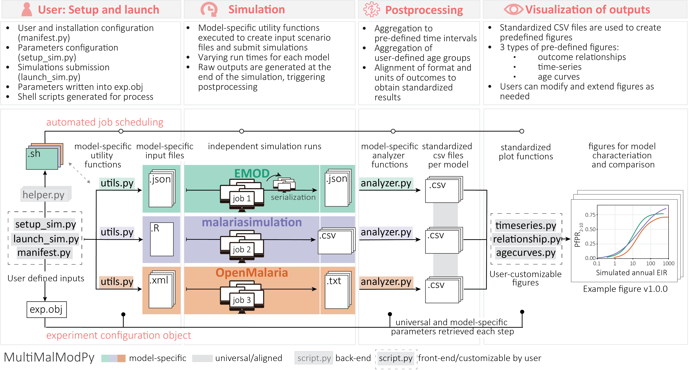

Overview of MultiMalModPy¶
MultiMalModPy provides a unified Python framework for running and comparing simulations across multiple malaria models.
It includes both model-agnostic (global) scripts and model-specific modules:
- Global scripts handle parameter definition and simulation management.
- Model-specific scripts manage tasks like input generation, output processing, and simulation logic.
All user-defined parameters are stored in a Python serializable object, ensuring consistency during both pre-processing and post-processing steps across models.

How It Works
The simulation process begins with user-defined inputs in setup_sim.py.
Once configured, simulations are launched via launch_sim.py. During this step:
- All relevant parameters are bundled into a serialized Python object (
exp.obj). - Platform-specific job submission scripts (e.g.,
.shon HPC) are automatically generated to streamline execution.
Shell scripts ensure reproducibility and automation across high-performance environments.
Output and Visualization¶
Each model produces standardized CSV outputs, which are used to generate a predefined set of visualizations. These include:
- Relationships between disease transmission and outcomes
- Time-series trends
- Age-specific patterns
The plotting system is modular and easily extendable. MultiMalModPy includes three standard plotting scripts:
- plot_timeseries.py: time-series of selected outcome measures
- plot_agecurves.py: outcome trends across age groups
- plot_relationship.py: relationships between transmission intensity and outcomes
Repository Layout and Directory Structure¶
MultiMalModPy is organized for clarity and modularity. It includes:
- An experiments folder, where simulations are configured and executed.
- A simulation output folder, which stores results in standardized formats.

Repository Breakdown¶
Back-End (Model-Specific Logic)¶
Each model has its own directory with input handling, simulation execution, and output processing logic:
EMOD/— EMOD-specific scriptsmalariasimulation/— malariasimulation-specific scriptsOpenMalaria/— OpenMalaria-specific scriptsutility/— generic helper functions
Front-End (User Scripts)¶
Located in the project root, these user-facing components control setup and execution:
manifest.py— manages system paths, environment config, and dependenciessetup_sim.py— defines experiment inputs and simulation optionslaunch_sim.py— runs the experimentinterventions/— optional: parameter scripts for intervention scenarios
Support and Infrastructure¶
dependencies/— virtual environment setup, requirements.txt, and install scriptstarget_calibration/— model-specific simulation outputs used for transmission calibrationtests/— unit and integration tests for validating MultiMalModPy and model installationsdocs/— Markdown files and assets used to build the documentation site (via MkDocs)
Experiments folder¶
Contains all input files, logs, and generated job scripts for running simulations. This includes:
- Input configurations
- Log files (
.err,.out) - Shell scripts for HPC job scheduling and reproducibility
Simulation output folder¶
Standardized results are saved here to ensure comparability across models. Includes:
- Output CSVs for:
- EMOD
- malariasimulation
- OpenMalaria
- Auto-generated plots for rapid evaluation
Next Up¶
→ How to use MultiMalModPy
→ Input parameters and predefined options
→ Glossary
→ Installation and requirements
→ First time configurations (manifest.py)